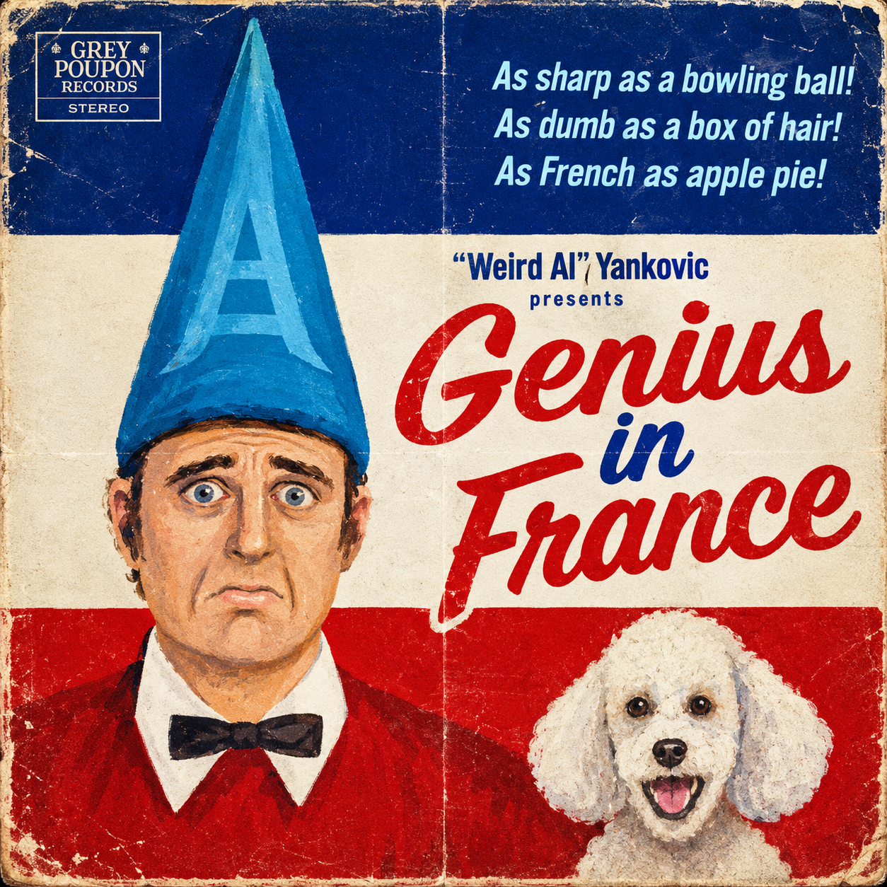

Imagem modificada com ajuda da inteligência artificial
“Genius in France” encerra o álbum Poodle Hat e é uma homenagem ao estilo musical peculiar de Frank Zappa. A introdução da música apresenta um solo de guitarra executado por Dweezil Zappa, filho de Frank Zappa. A letra conta a história de uma pessoa que, apesar de ser rejeitada em outros lugares, encontra aceitação na França.
A premissa da canção pode fazer referência à trajetória do comediante e cineasta norte-americano Jerry Lewis, que era respeitado como cineasta e ator na França e em outros países europeus, enquanto nos Estados Unidos era frequentemente considerado vulgar e pouco engraçado. Com duração de 8 minutos e 56 segundos, “Genius in France” é a quarta música mais longa já gravada por “Weird Al” Yankovic.
(Hahaha)
(Well,) I’m not the brightest crayon in the box
Everyone says I’m dumber than a bag of rocks
I barely even know… how to put on my own pants!
But I’m a genius in France (yeah), genius in France, genius in France!
Hoom chaka laka
Hoom chaka laka
Hoom chaka
I may not be the sharpest hunk of cheese
I got a negative number on my SATs
I’m not good looking and I don’t know how to dance
But nevertheless and in spite of the evidence I am still widely considered to be a
Genius in France, genius in France, genius in France!
People say I’m a geek, a moronic little freak
An annoying pipsqueak with an unfortunate physique
If I was any dumber, they’d have to water me twice a week
But when the Mademoiselles see me, they all swoon and shriek
They dig my mystique, they think I’m c’est magnifique
When I’m in Par-ee, I’m the chic-est of the chic
They love my body odor and my bad toupee
They love my stripey shirt and my stupid beret
(Bow, dway-doo dway-doo bow, dway-doo dway-doo bow) And when I’m sipping on a Perrier
(Dway-doo dway-doo bow, dway-doo dway-doo bow) In some café down in Saint-Tropez
(Dway-doo dway-doo bow, yeah) It’s hard to keep the fans at bay
They say, "Sign my poodle, s’il vous plait"
"Sign my poodle, s’il vous plait"
Hemenene humenene
Hemenene humenene
Poodle… poodle…
Folks in my hometown think I’m a fool
Got too much chlorine in my gene pool
A few peas short of a casserole
A few buttons missing on my remote control
A few fries short of a happy meal
I couldn’t pour water out of a boot with instructions on the heel
Instructions on the heel
Instructions on the heel
But when I’m in Provence, I get free croissants
Yeah, I’m the guy every French lady wants
And if you ask ’em why, you’re bound to get this response
(He’s a genius in France! Genius in France!)
That’s right
(He’s a genius in France! Genius in France!)
You know it
(He’s a genius in France, genius in France, genius in France!)
I’m not the brightest bulb on the Christmas tree
But the folks in France, they don’t seem to agree
They say, "Bonjour, Monsieur would you take ze picture with me?"
I say, "Oui, oui"
That’s right, I say, "Oui, oui"
("Oui, oui")
(He says, "Oui, oui")
I’m dumber than a box of hair
But those Frenchies don’t seem to care
Don’t know why, mon frère
But they love me there
I’m a genius in France
(Yeah) I’m a genius in France
Gonna make a big splash when I show up in Cannes
Gonna make those Frenchies scream
"You ze man! You ze man! You ze man!"
Like a fine Renoir (oir!), I’ve got that “je ne sais quoi” (quoi!)
Like a fine Renoir (ooh la la), I’ve got that “je ne sais”
Quoi quoi quoi quoi quoi, (bow diddy) oo-wee-oo (yeah)
Quoi quoi quoi quoi quoi, (bow diddy) oo-wee-oo (didi-di di)
Bow diddy bow di bow di bow bow diddy
Bow diddy bow di bow di bow bow diddy
Bow
[snort]
I’m a taco short of a combo plate
But by some twist of fate, all the Frogs think I’m great
Oh, the men all faint and the women scream
They like me more than heavy cream
When I’m in Versailles, I’m a popular guy
My oh my, I’m as French as apple pie (apple pie)
They think I’m awful witty, a riot and a half
When I tell a stupid joke, they laugh (haw haw haw haw haw)
And laugh (haw haw haw haw haw haw)
People in France have lots of attitude
They’re snotty and rude, they like disgusting food
But when they see me, they just come unglued
They think that I am one happening dude
Bowm ba ba bowm ba bowm ba bowm
I’m about as sharp as a bowling ball
But they like me better than Charles de Gaulle
Entre nous, it’s very true
The room temperature’s higher than my IQ
But they love me more than Gérard Depardieu
How did this happen; I don’t have a clue (yeah)
Well, I’m not the quickest tractor on the farm
I don’t have any skills or grace or charm
And most people look at me like I’m all covered with ants
But I’m a genius in France (yeah), genius in France, genius in France!
And I’m never goin’ back, I’m never goin’ back
I’m never never never never goin’ back home again
I’m tearin’ up my return flight ticket
Gonna tell the folks back home where they can stick it
’Cause I’m never goin’ back
I’m never goin’ back
I’m never goin’ back
The girls back home never gave me a chance
But I sho’ ’nuff got them Frogs in some kinda trance
And I’m aware that it’s a most improbable circumstance
But Great Googily Moogily, I’m a genius in France
Every Frenchie that I meet
Just can’t wait to kiss my feet
Get in line, pucker up! “Tout de suite”!
Bowm diddy bowm diddy bowm diddy
I’m gettin’ even more famous by the hour
I’m stuffed with pastries and drunk with power
Now they’re puttin’ up my statue by the Eiffel Tower
A little more to the left, boys, a little more to the left
A little more to the left, boys, a little more to the left
I’m the biggest dork there is alive
My mom picked out my clothes for me ’til I was 35
And I forgot to mention
I’m not even welcome at the Star Trek convention
But the Frenchies think
That my poop don’t stink
I’m a genius in France
Say, would you pass the Grey Poupon?
“Merci beaucoup”